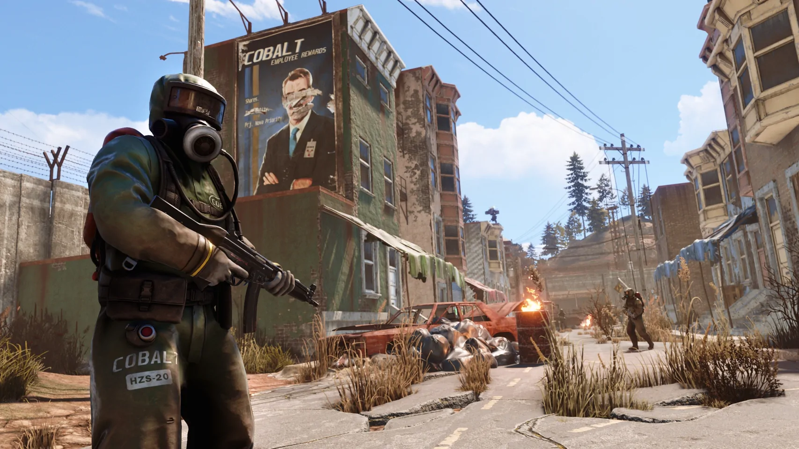
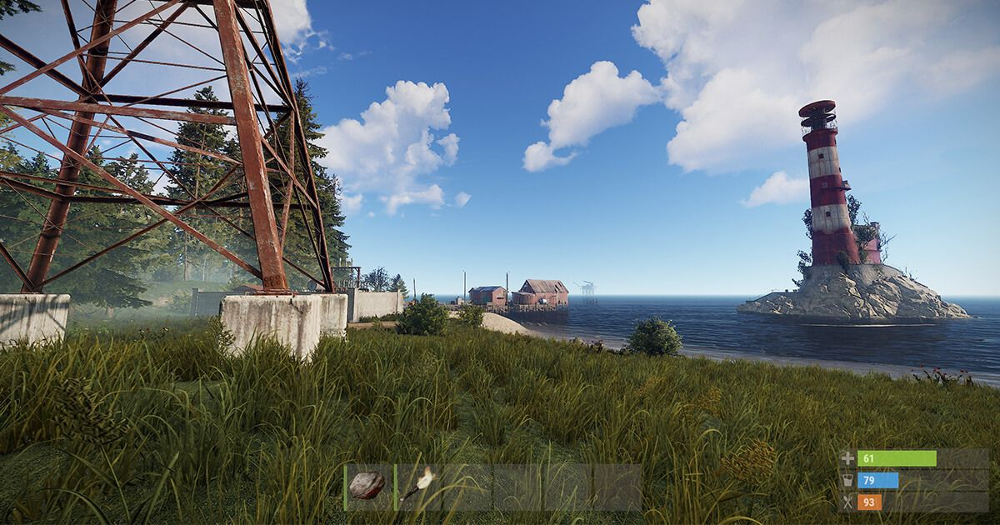
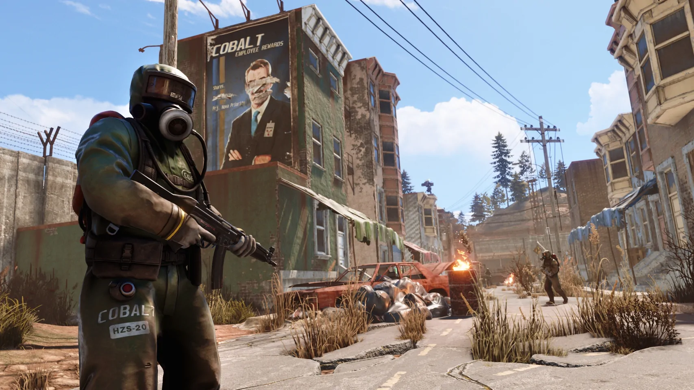
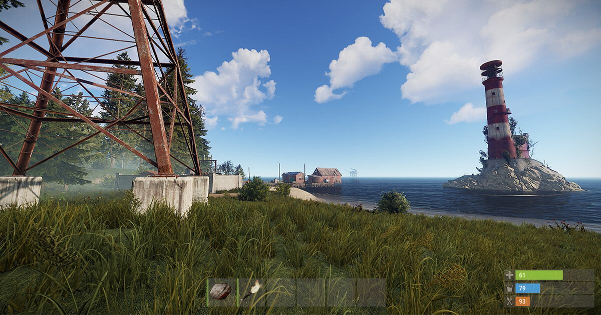

Rust
Het enige doel in Rust is overleven. Alles wil dat je sterft - de natuur van het eiland en andere bewoners, het milieu, andere overlevenden. Doe wat nodig is om nog een nacht mee te gaan.
Het enige doel in Rust is overleven. Alles wil dat je sterft - de natuur van het eiland en andere bewoners, het milieu, andere overlevenden. Doe wat nodig is om nog een nacht mee te gaan.
 




"Rust is in essentie een degelijke game die op de console niet al te best draait. Server issues zijn, ook nu nog, prominent aanwezig en dat is moordend voor een game die je verplicht online te spelen. Als het je lukt in een server te komen dan moet je voorbereid zijn om jezelf met hand en tand te verdedigen totdat je een degelijk bestaan op hebt kunnen bouwen in de game. Rust is op dit moment geen game die je aan iedereen aan kunt bevelen dankzij de spelers die het vaak voorzien hebben op beginnende spelers. Lukt het je echter om je vrij te vechten, dan wacht je een aardige ervaring waar je minimaal 50 uur mee vooruit kunt. De vraag is alleen of je het zo lang vol kunt houden."
XBW
"Survival in Rust's beautiful but extremely hostile world is often unfair, but its combination of crafting, exploration, and combat is unlike any other."
IGN
"Rust is a malicious experience rife with betrayal, cruelty and greed. That can make it both frustrating and sublime in equal doses."
PC Gamer